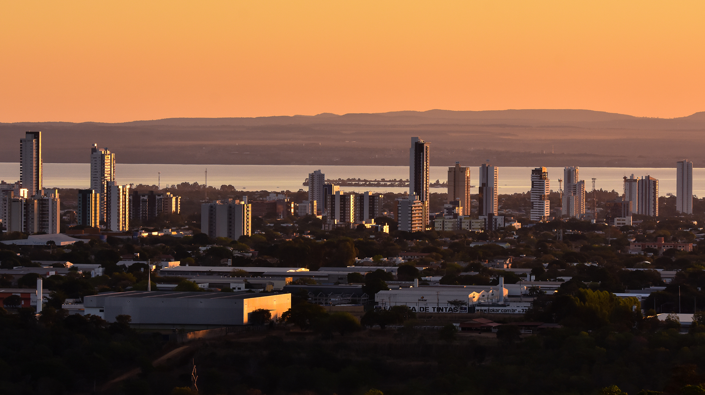
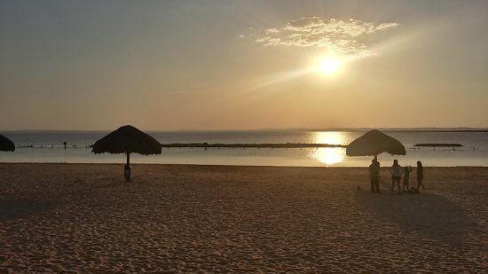

O que eu mais gosto em Palmas?
Capital mais jovem do País, está localizada no meio do cerrado Tocantinense!
Os pioneiros de Palmas representam a essência da coragem e da esperança que deram origem à cidade. Vindos de diferentes lugares, eles chegaram a uma região ainda em formação, enfrentando desafios como o clima intenso, a falta de estrutura e a distância de grandes centros urbanos.
Conhecida pelo calor escaldante e um por do sol de tirar o fôlego!

Palmas, capital do Tocantins, é um lugar que me encanta por vários motivos. Um dos pontos que mais gosto é o pôr do sol na Praia da Graciosa. A vista do lago com o céu alaranjado cria um cenário tranquilo e perfeito para relaxar depois de um dia corrido.
Mas o que faz uma capital tão jovem ser tão especial?

Um dos pontos que torna Palmas verdadeiramente especial é a forma como a cidade consegue unir modernidade e natureza em perfeita harmonia. Planejada desde o início, suas avenidas largas e bem organizadas facilitam o dia a dia, ao mesmo tempo em que preservam espaços abertos e áreas verdes que trazem leveza ao ambiente urbano.
Pontos Turísticos
Locais mais procurados pelos visitantes!

O lago que acompanha a cidade não é apenas um elemento paisagístico, mas também um convite constante ao lazer e à contemplação. Seja para praticar esportes, encontrar amigos ou simplesmente apreciar a vista, ele se torna parte da rotina e da identidade local.